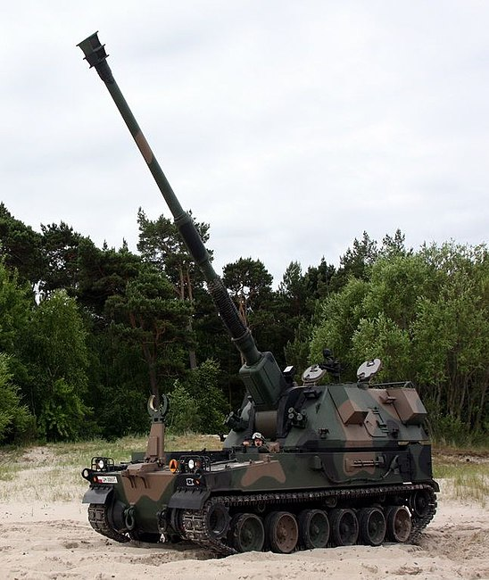
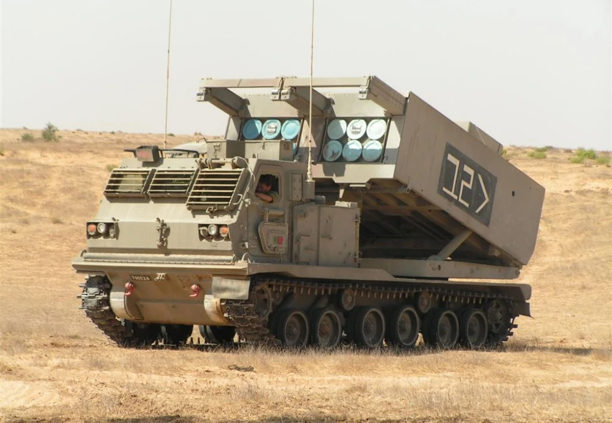
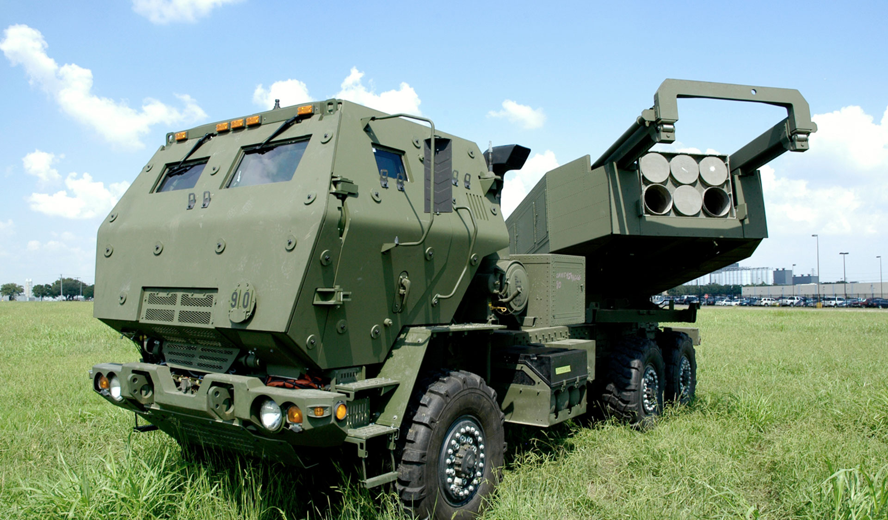
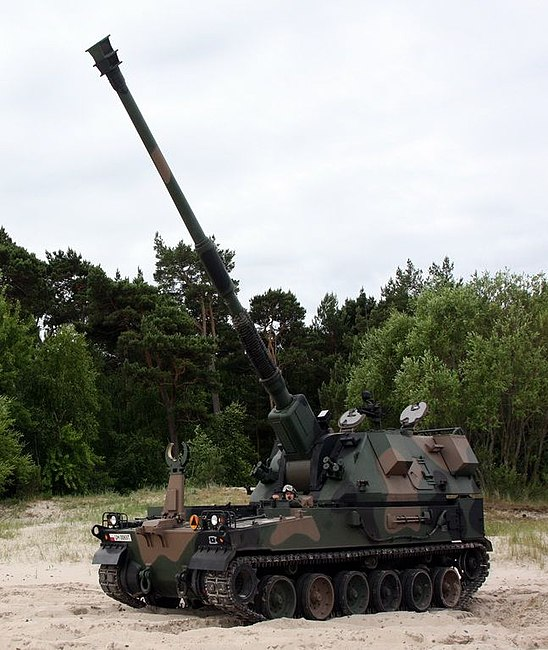

Артилерійське озброєння
Артилерійське озброєння — сукупність різнорідних видів та предметів (основних та допоміжних) артилерійської техніки, різновид вогнепальної ствольної зброї, в основі яких лежать артилерійські комплекси (артилерійські системи, боєприпаси до них, приладів для ведення та корегування стрільби), призначених для ураження протилежної сторони у повітрі, на суходолі та на воді.
Різновиди
- власно артилерійські системи — гармати ствольної артилерії (наземної та зенітної), міномети, бойові машини реактивної артилерії (РСЗВ), військові прилади, радіотехнічні станції, радіолокаційне озброєння, гранатомети, стрілецька та холодна зброя
-

AHS Krab
Дізнатися більше -

M270
Дізнатися більше -

M142 Himars
Дізнатися більше
-

-
боєприпаси — набої до стрілецької зброї, постріли ствольної артилерії, елементи пострілів, ручні гранати, порохи та вибухові речовини, снаряди до систем реактивної артилерії;
-
допоміжні засоби — запасні частини, інструмент та приладдя, технічне обладнання й оснащення рухомих ремонтних майстерень, арсеналів, баз, складів, полігонів, лабораторій, матеріали для збереження та експлуатації озброєння;
-
рухомі артилерійські ремонтні майстерні та лабораторії, що змонтовані на автомобільному транспорті.